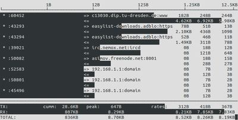
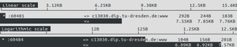

iftop
Dieser Artikel wurde für die folgenden Ubuntu-Versionen getestet:
Ubuntu 16.04 Xenial Xerus
Ubuntu 14.04 Trusty Tahr
Zum Verständnis dieses Artikels sind folgende Seiten hilfreich:
 iftop
iftop  ist ein Kommandozeilenwerkzeug zum Überwachen des Netzwerkverkehrs (Traffic) in Echtzeit, ähnlich wie das Programm top zum Überwachen der Prozesse.
ist ein Kommandozeilenwerkzeug zum Überwachen des Netzwerkverkehrs (Traffic) in Echtzeit, ähnlich wie das Programm top zum Überwachen der Prozesse.
iftop listet alle Netzwerkverbindungen einer Netzwerkschnittstelle übersichtlich auf und zeichnet im Hintergrund ein Balkendiagramm. Die Einträge können dabei nach verschiedenen Kriterien sortiert werden, vorrangig jedoch nach Bandbreite.

Installation¶
Da das Programm in der Standardinstallation von Ubuntu nicht enthalten ist, muss das folgende Paket nachinstalliert [1] werden:
iftop (universe)
 mit apturl
mit apturl
Paketliste zum Kopieren:
sudo apt-get install iftop
sudo aptitude install iftop
Verwendung¶
iftop wird im Terminal [2] mit folgendem Befehl aufgerufen:
sudo iftop OPTIONEN
Wird iftop ohne Parameter aufgerufen, wird die erste von iftop gefundene Netzwerkschnittstelle (Interface) verwendet. Dies ist meist eth0, auch wenn darüber zum Zeitpunkt des Aufrufs kein Netzwerkverkehr stattfindet. Da iftop den gesamten Netzverkehr aller Benutzer überwacht und dazu auf das /proc-Verzeichnis zugreift, benötigt es Root-Rechte [3].
Soll iftop eine bestimmte Schnittstelle überwachen, muss man diese über den Parameter -i zuweisen. Bei der Nutzung von wlan0 sähe das zum Beispiel so aus:
sudo iftop -i wlan0
Möchte man herausfinden, welche Schnittstelle gerade benutzt wird, ruft man den folgenden Befehl auf:
route -n
Dessen Ausgabe sieht dann zum Beispiel so aus:
Kernel-IP-Routentabelle Ziel Router Genmask Flags Metric Ref Use Iface 0.0.0.0 192.158.1.1 0.0.0.0 UG 0 0 0 wlan0 169.154.0.0 0.0.0.0 255.255.0.0 U 1000 0 0 wlan0 192.198.1.0 0.0.0.0 255.255.255.0 U 2 0 0 wlan0
Hat man das Programm gestartet, kann man die Darstellung durch das Drücken verschiedener Tasten manipulieren (siehe Auflistung unten). Die meisten Darstellungsarten können auch als Startoptionen angegeben werden, so dass iftop die entsprechende Darstellungsweise von Programmstart an benutzt.
Darstellung¶
Der Aufbau der Anzeige gliedert sich in vier Teile: Skala, Verbindungen, Verbindungsgeschwindigkeit und Gesamtzählwert.
Skala¶

Die Skala kann in zwei Modi angezeigt werden, zwischen denen mit der Tastenkombination
⇧ +
L umgeschaltet werden kann: linear und logarithmisch.
Beispiel für eine lineare Anzeige:
Linear scale 25.0Kb 50.0Kb 75.0Kb 100Kb 125Kb └────────────────┴────────────────┴────────────────┴────────────────┴────────────────
Beispiel für eine logarithmische Anzeige:
Logarithmic scale 100b 1.00Kb 10.0Kb 100Kb └───────────────┴────────────────┴───────────────┴────────────────┴────────────────┴─
Verbindungen¶
Der Hauptteil der Anzeigefläche ist die Verbindungsliste, welche die Verbindungen auflistet und Verbindungsgeschwindigkeiten des jeweiligen Down- und Upstreams pro Verbindung darstellt. Je nach Konfiguration können auch Ports und Dienste eingeblendet werden.
EIGENER RECHNER => wikipedia-lb.esams.wikimed 3.22KB 0b 0b 10b
<= 49.1KB 0b 0b 21bMöchte man sich nur Datenströme in eine bestimmte Richtung anzeigen lassen, kann die Darstellung mit T verändert werden.
Das folgende Beispiel zeigt beide Richtungen in einer Zeile (Werte wurden zusammengefasst):
EIGENER RECHNER <=> wikipedia-lb.esams.wikimed 52.3KB 0b 0b 31b
Verbindungsgeschwindigkeit¶
Die Verbindungsgeschwindigkeit zeigt die Durchschnittsgeschwindigkeit von drei verschiedenen Zeitintervallen an. Bei Bedarf auch die gesamte Datenmenge, die auf jeder Verbindung verschickt wurde (Anzeige durch ⇧ + T ).
29.3KB 0b 134b 601b # g. Datenmenge 2sec 10sec 40sec
(Hier wurde die Gesamtdatenmenge hinzugewählt)
Möchte man die Liste der Verbindungen nach den entsprechenden Zeitintervallen sortieren, kann man dies über die Tasten 1 , 2 und 3 veranlassen. Das von von der Balkendarstellung genutzte Zeitintervall kann über die Tastenkombination ⇧ + B geändert werden.
Gesamtzählwerk¶
Am unteren Rand des Terminalfensters fasst iftop die Daten zusammen:
TX: cumm: 984KB peak: 2.20Kb rates: 0b 533b 363b RX: 6.03MB 10.2Kb 0b 268b 782b TOTAL: 6.99MB 11.6Kb 0b 801b 1.12Kb
In der ersten Zeile wird der Upstream (ausgehend) , in der zweiten der Downstream (eingehend) und in der untersten beides zusammengefasst angezeigt.
In der Spalte "cumm" wird die Datenmenge aufgezeigt, die seit dem Start von iftop über die gewählte Schnittstelle geschickt wurde. "peak" wiederum zeigt die Höchstgeschwindigkeit, die iftop messen konnte. In der Spalte "rates" werden die allgemeinen Verbindungsgeschwindigkeiten des Interfaces angezeigt.
Optionen und Tastenkombinationen¶
Möchte man iftop mit bestimmten Darstellungsoptionen starten, kann man dies einfach über Optionen steuern:
Optionen von iftop | ||
| Parameter | Bedeutung | |
-h | Zeigt einen Hilfetext an | |
-n | Wechselt zwischen IP- und DNS-Darstellung | |
-s | Zeigt/versteckt Quellrechner | |
-N | Löst Servicenamen auf (anhand v. Ports) | |
-p | Traffic, der nicht über das angegebene Interface läuft, wird ebenfalls angezeigt | |
-b | Schaltet Balkendarstellung ein/aus | |
-B | Schaltet zwischen bytes/sec und bits/sec um | |
-f | Filter bearbeiten | |
-F | Nur bestimmten Bereich des Netzwerkes darstellen | |
-c | Alternative Konfigurationsdateien verwenden | |
Außerdem kann man viele Darstellungsoptionen in der laufenden iftop-Sitzung ändern:
| Tastenkombinationen | ||
| Taste(n) | Bedeutung | |
| H | Zeigt einen Hilfetext an | |
| N | Wechselt zwischen ip-und DNS-Darstellung | |
| S | Zeigt/versteckt Quellrechner | |
| D | Zeigt/versteckt Zielrechner | |
| T | Wechselt zwischen Darstellungsrichtungen | |
| ⇧ + N | Löst Servicenamen auf (anhand v. Ports) | |
| ⇧ + S | Zeigt/versteckt Port-Angaben (Quelle) | |
| ⇧ + D | Zeigt/versteckt Port-Angaben (Ziel) | |
| P | Zeigt Ports an (beide Seiten) | |
| ⇧ + P | Friert Darstellung ein | |
| B | Schaltet Balkendarstellung ein/aus | |
| ⇧ + T | Höchstdurchsatzanzeigen | |
| J und K | In der Liste rauf und runter scrollen | |
| F | Filter bearbeiten | |
| L | Filterart der Anzeige festlegen | |
| ⇧ + L | Zwischen linearer und logarithmischer Skalierung umschalten | |
! BEFEHL | Shellbefehl ausführen | |
| 1 , 2 oder 3 | Sortierung nach 1., 2. oder 3 Spalte | |
| < | Sortierung nach Quellname | |
| > | Sortierung nach Zielname | |
| ⇧ + B | Balkendarstellung nach Daten von 2/10/40 Sekunden | |
| Q | iftop beenden | |
Die Tastenkombinationen können auch in der iftop-Sitzung mit H angezeigt werden.
Beispiel¶
Soll eth0 überwacht und dazu noch die Ports angezeigt werden, die von den Verbindungen verwendet werden, nutzt man folgenden Befehl, welcher außerdem die Verbindungsgeschwindigkeit in Bytes (pro Sekunde) statt Bits anzeigt:
sudo iftop -PBi eth0
Konfigurationsdatei¶
Möchte man dass iftop immer mit bestimmten Einstellungen gestartet wird, dann muss man eine Konfigurationsdatei des Names .iftoprc anlegen, diese wird zunächst im Homeverzeichnis des Benutzers gesucht. Mit der Option -c kann dem Programm auch ein anderer Pfad mitgegeben werden.
Die einzelnen Optionen sind in der Manpage aufgeführt.
Beispieldatei¶
interface: wlan0 # Zeigt Traffic über Wlan0 an dns-resolution: yes # DNS-Namen statt ip-Adressen anzeigen port-resolution: yes # Dienst der den Port nutzt anzeigen show-bars: yes # Balkendarstellung aktivieren port-display: on # Ports anzeigen use-bytes: yes # Bytes statt Bits verwenden sort: 40s # Sortierung nach dritter Spalte line-display: two-line show-totals: yes # Gesamtvolumen einer Verbindung anzeigen log-scale: yes # logarithmische Skalierung
Links¶
Netzwerk-Monitoring
 – Übersichtsseite über weitere Werkzeuge
– Übersichtsseite über weitere WerkzeugeShell/Befehlsübersicht und Shell/Anwendungen
– Übersichtsseiten
- Erstellt mit Inyoka
-
 2004 – 2017 ubuntuusers.de • Einige Rechte vorbehalten
2004 – 2017 ubuntuusers.de • Einige Rechte vorbehalten
Lizenz • Kontakt • Datenschutz • Impressum • Serverstatus -
Serverhousing gespendet von